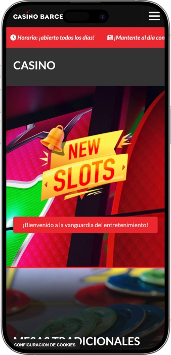

Oferta exclusiva de bienvenida de
Oferta exclusiva de bienvenida de
Casino Barcelona — juego, póker, shows y ocio junto al mar
Los mejores casinos
Bonus Details
Casino
Bonos
Rate
Giros gratis
Más info
Conseguir
Ventajas
-
Botes progresivos en slots 100.000€+
-
Más de 300 slots, sorteos frecuentes
-
Cash de póker desde 1/3€
-
Torneos de póker todo el año
-
Mesas clásicas: ruleta, blackjack, bacará
-
Zona 24/7 para juego y apuestas
-
Mar cerca, shows y música en vivo
- Sus horarios amplios y salas con distintos ritmos permiten una visita flexible, tanto para una partida rápida como para una noche completa. Para quienes buscan emoción, el póker activo y los slots con botes ofrecen oportunidades de premios elevados
Casino Barcelona App


Acerca de Casino Barcelona
Casino Barcelona se diferencia por la mezcla de póker muy vivo y una gran oferta de slots, con opciones para distintos niveles de apuesta. También sobresale por su ambiente de ocio completo, con bares y eventos nocturnos junto a las salas de juego.
- Botes en slots: 100.000€+.
- Cash de póker: 1/3€+.
- Sala abierta: 24/7.
Casino Barcelona es un punto de ocio donde se unen juego, descanso y el ambiente vibrante de la ciudad junto al mar. Resulta sencillo elegir un estilo de partida porque conviven mesas tradicionales y una zona moderna de máquinas. A quienes les gusta el póker les encaja tanto el cash como los torneos con ritmos diferentes.
El espacio está pensado para que se sientan a gusto tanto quienes empiezan como quienes ya tienen experiencia y valoran un servicio ágil. Además del juego, el entretenimiento tiene un papel importante y la visita suele incluir algo más que apostar. Puedes completar la noche con bar, gastronomía y eventos que se renuevan con frecuencia. La ubicación en Port Olímpic refuerza una sensación mediterránea muy especial. Los horarios amplios permiten entrar después de cenar o tras un paseo por la zona. La atmósfera combina modernidad con energía nocturna. En conjunto, es una elección sólida para una noche completa de emoción y ocio en un mismo lugar.
Noche junto al mar: estilo y ritmo de Casino Barcelona
Casino Barcelona recibe con un estilo moderno y la energía de Port Olímpic, donde se nota la cercanía del paseo marítimo y la noche urbana. Dentro, el ambiente cambia del tono concentrado de las mesas de póker a una zona de slots más luminosa y dinámica. El espacio está pensado para quedarse, alternando juego y descanso con naturalidad. La visita suele formar parte de un plan nocturno completo, no de una parada rápida, porque alrededor hay muchas opciones para continuar. Se adapta bien tanto a grupos como a quien va solo.
Los horarios de Casino Barcelona permiten organizar la noche sin prisas y encajarla con el ritmo de la ciudad. Hay salas con distintos regímenes, incluida una zona abierta las 24 horas, lo que aporta mucha flexibilidad. Las mesas tradicionales suelen concentrarse en franjas de tarde y noche, mientras que póker y máquinas se alargan más, ideal para sesiones tardías. Esto encaja con quienes prefieren jugar después de cenar o combinar el casino con otros planes. En conjunto, es un lugar al que puedes entrar tarde y aun así encontrar acción.
La parte de bares refuerza la idea de ocio completo, con pausas cómodas entre partidas. Dentro del complejo conviven formatos distintos, desde un bar deportivo para seguir eventos en directo hasta propuestas más tranquilas centradas en vino y cócteles. Hay opciones tanto para un descanso breve como para alargar la conversación antes de volver a jugar. Esa variedad ayuda a construir la noche en un mismo espacio, sin necesidad de desplazamientos. Para quienes disfrutan del ambiente nocturno, suma mucho al conjunto.
La infraestructura hotelera de Port Olímpic hace que Casino Barcelona sea práctico para visitantes que quieren alojarse cerca del mar y del ocio. A poca distancia hay hoteles grandes y servicios turísticos, por lo que la logística suele ser sencilla: paseo, cena, casino y regreso sin trayectos largos. Este formato es especialmente atractivo en escapadas cortas o fines de semana. La zona es conocida por su oferta gastronómica, rutas de playa y vida nocturna, y el casino encaja de forma natural. Por eso, la visita suele integrarse en la experiencia global del barrio.
Los eventos y el entretenimiento son un punto fuerte de Casino Barcelona y lo convierten en algo más que un espacio de juego. Es habitual encontrar formatos de show, noches de comedia y propuestas musicales que motivan la visita incluso sin intención de apostar. Se suman actividades actuales pensadas para distintos públicos, como el simracing y experiencias interactivas. En días de evento, el ambiente se anima desde temprano, con gente que llega para cenar y luego pasa al show antes de jugar. Esa mezcla lo hace un destino nocturno versátil.
Los programas de bonificación y fidelidad en Casino Barcelona suelen premiar la recurrencia y la participación en distintas áreas. En este tipo de sistemas no solo cuenta el juego, sino también la experiencia global: volver, asistir a eventos y consumir en bares o restaurantes. Los miembros reciben ofertas personalizadas, prioridades en determinadas actividades y ventajas que mejoran cada visita. Para el cliente se traduce en una sensación más “club”, con privilegios que crecen con el tiempo. Es una propuesta cómoda para quienes disfrutan repitiendo y aprovechando beneficios progresivos.
Servicio y cobros: personal, idiomas y dinero en Casino Barcelona
El equipo de Casino Barcelona suele trabajar con el ritmo propio de un complejo de ocio muy activo, donde la rapidez y la atención marcan la diferencia. En las salas de juego, el personal ayuda a orientarse, localizar mesas, caja y puntos de servicio. Los crupieres en mesas tradicionales garantizan el orden, la corrección de apuestas y el cumplimiento de procedimientos. En la zona de póker, el staff gestiona asientos, listas de espera y normas para que las partidas fluyan sin fricciones. En bares y áreas de atención se mantiene un trato ágil, cordial y práctico.
En cuanto a idiomas, lo habitual es combinar el idioma local con inglés, lo que facilita la visita a turistas. En póker y juegos de mesa, muchos términos son internacionales y la comunicación se apoya en protocolos y gestos estándar. Si hace falta, el personal puede explicar reglas de forma breve y clara, centrada en el funcionamiento del juego. Para el visitante esto significa que la adaptación suele ser rápida, especialmente si ya tiene claro qué quiere jugar. Para gestiones más “formales” o cobros elevados, conviene acudir en horas más tranquilas.
La moneda principal en el casino físico es el euro, y la operativa interna está diseñada alrededor de él. Esto simplifica apuestas, cambios y cálculos en mesa, además del funcionamiento de caja. Si vienes con otra moneda, suele ser más eficiente prever el cambio con antelación para evitar demoras en horas punta. En la zona de Port Olímpic es común encontrar cajeros automáticos y servicios que ayudan a retirar efectivo cuando es necesario. Aun así, planificar el presupuesto y el método de pago antes de entrar mejora la experiencia.
Los métodos de pago en un casino presencial dependen de la zona y de las normas internas: a veces el efectivo resulta más directo, y en servicios como restauración o bares pueden aceptarse tarjetas con normalidad. Es importante diferenciar el pago de consumos (comida, bebidas, parking) de la compra de fichas o operaciones vinculadas al juego, que pueden tener requisitos específicos. Si piensas mover importes altos, es aconsejable informarte sobre límites, identificación y posibles comisiones. En festivales de póker o días de mucha afluencia, estas previsiones son aún más útiles. Lo más práctico es combinar tarjeta y una parte del presupuesto en efectivo.
El cobro de premios en un casino físico suele gestionarse en caja siguiendo un procedimiento: documento de identidad, verificación y formalización del pago. Para importes pequeños, el proceso normalmente es rápido; para cantidades grandes puede requerir controles adicionales, registro de datos y cumplimiento de límites. En póker, los pagos de torneo pueden tener su propio circuito, con listados de premiados y documentación preparada según reglamento. Para evitar contratiempos, conviene no dejar el trámite para el final de la noche y considerar la carga de trabajo de caja. Elegir horas menos saturadas suele reducir esperas.
La fiscalidad de los premios depende del estatus del jugador y de cómo deban declararse los ingresos. De forma general, el premio puede considerarse renta y, para residentes, suele integrarse en la declaración anual, mientras que para no residentes existen matices específicos. En premios elevados, el casino puede solicitar información y documentación por razones de control financiero. Si prevés ganancias significativas o juego recurrente, es recomendable consultar a un asesor fiscal para actuar correctamente. Así mantienes la experiencia como entretenimiento sin sorpresas posteriores.
Cómo entrar en Casino Barcelona: normas, vestimenta y llegada
Casino Barcelona está orientado a público adulto, por lo que el acceso es solo para mayores de edad y se solicita documento en la entrada. Para entrar con agilidad, conviene llevar el original del ID o pasaporte preparado. Dentro es importante respetar las normas de convivencia: no interferir en el juego, mantener un comportamiento adecuado y seguir indicaciones de seguridad. El código de vestimenta es moderno y práctico, pero con límites claros para conservar una imagen cuidada. Evita llevar bultos grandes, ya que pueden pedirte dejarlos en guardarropa. Ten en cuenta que distintas salas y bares pueden tener horarios diferentes. Si vas en coche, planifica el parking para no perder tiempo de noche. En taxi o transporte público suele ser cómodo, especialmente en horario nocturno. Para una experiencia redonda, define tu plan de juegos y ocio antes de entrar. Así disfrutas sin prisas y con mejor control del presupuesto.
Código de vestimenta
- • Permitido: casual cuidado, zapatillas, looks urbanos modernos.
- • No permitido: chanclas, alpargatas, bañador, ciertos estilos de camiseta sin mangas, cascos de moto.
- • Consejo: apuesta por “smart casual” para acceder sin complicaciones.
Condiciones de acceso y documentación
- • Edad: acceso solo 18+.
- • Documento: original de ID/pasaporte; en algunos casos se pide acreditación adicional de estatus.
- • Control: seguridad en entrada y cumplimiento de normas internas.
Prohibiciones y límites
- • Mochilas grandes y bultos voluminosos: pueden limitar el acceso o requerir guardarropa.
- • Conducta inapropiada: advertencia, denegación de servicio o expulsión.
- • Foto/vídeo: puede haber restricciones en salas por privacidad.
Parking y cómo llegar
- • Parking cercano: es práctico usar aparcamientos de la zona.
- • Taxi: opción cómoda para la noche.
- • Metro/autobús: útiles para evitar tráfico y moverse con rapidez.
YESFUN: programa de fidelidad de Casino Barcelona — ventajas progresivas
El programa de fidelidad de Casino Barcelona suele basarse en una idea sencilla: cuanto más participas en la experiencia (juego, ocio y consumos), más beneficios recibes. Está pensado no solo para jugadores, sino también para quienes combinan sala, bar, gastronomía y eventos. La adhesión suele empezar con un registro, tras el cual las visitas y la actividad se transforman en estatus y ofertas personalizadas. Este enfoque es cómodo porque las ventajas crecen de forma gradual y se notan especialmente en clientes recurrentes. Para quien llega por primera vez, lo más atractivo es la facilidad: registrarse y usar el perfil/carné en cada visita. Para jugadores habituales, pesan más las prioridades, la acumulación acelerada y condiciones personalizadas. El programa encaja muy bien con quienes alternan slots, mesas, póker y pausas en bares. A mayor variedad de actividad, más completa suele ser la propuesta de beneficios. Normalmente existen niveles que reflejan recurrencia y volumen de juego. Con cada salto de nivel cambian multiplicadores, ritmo de acumulación y acceso a ventajas. El resultado es una experiencia más cómoda y más razones para volver.
Condiciones de registro
- • Edad 18+: requisito imprescindible.
- • Documento: original de identificación para crear el perfil.
- • Contacto: teléfono/e‑mail para recibir ofertas.
- • Aceptación: confirmación de normas y juego responsable.
Niveles y cómo lograrlos
- • Start: tras el registro; ventajas base.
- • Silver: 3–5 visitas al mes o actividad notable; multiplicador +10%.
- • Gold: recurrencia constante; multiplicador +25% y ciertas prioridades.
- • Platinum/VIP: alta actividad; multiplicador +50%, trato más personalizado.
Bonos y ventajas
- • Regalo de bienvenida: cupón 5–10€ para bar/bebida (ejemplo).
- • Oferta de “cashback”: retorno 5–15% bajo condiciones promo (ejemplo).
- • Cumpleaños: bono 10–25€ o detalle (ejemplo).
- • Acumulación acelerada: multiplicadores x1,1 / x1,25 / x1,5 (ejemplo).
- • Prioridad: mejor gestión de esperas en horas punta.
- • Invitaciones: eventos cerrados y noches especiales para Gold/VIP.
- • Ventajas asociadas: propuestas en ocio y gastronomía según disponibilidad.
Software Providers
Entretenimiento y juegos e Casino Barcelona
Promociones y bonos en Casino Barcelona: premios, ofertas y eventos estacionales
Más allá del programa de fidelidad, Casino Barcelona suele animar la experiencia con promociones y propuestas de calendario que hacen la noche más intensa. En la zona de slots, el interés se centra a menudo en botes y sorteos puntuales, donde el premio depende de la máquina y de las condiciones del momento. En mesas tradicionales, resultan atractivas las noches temáticas y el enfoque de “experiencia”, que aporta ambiente sin complicar la visita. En póker, las series y festivales aumentan el ritmo, amplían formatos y suelen generar más acción durante varias jornadas. Además, el casino suele reforzar la parte de entretenimiento con comedia, música y actuaciones que se pueden combinar con el juego. Los bares acompañan con propuestas de temporada, y la gastronomía suma un motivo adicional para ir incluso sin plan de apuestas. Un componente importante son las retransmisiones deportivas y las apuestas, que llenan el ambiente en días de partidos grandes. En periodos estacionales (festivos, inicio de año, semanas de póker) el calendario suele intensificarse. Para aprovechar el mejor momento, conviene fijarse en fechas de festivales y semanas temáticas. A continuación, formatos habituales con ejemplos numéricos claros; las condiciones pueden variar.
- • Botes progresivos en slots: pueden alcanzar 100.000€+ según máquina y bote acumulado; potencial de premio alto en una sesión.
- • Series de torneos de póker: buy‑ins que a menudo parten de 40–50€ en satélites/diarios (ejemplo); premios según participación.
- • Cash de póker en límites bajos: mesas desde 1/3€ para jugar con control de banca.
- • Noches multiformato: combinación de póker/show/bar, donde la “ventaja” es el plan completo.
- • Sorteos estacionales: premios que pueden situarse entre 50€ y 5.000€ (ejemplo de rango habitual).
- • Ofertas de bar: cócteles temáticos y menús con 10–20% de descuento en franjas puntuales (ejemplo).
- • Comedia/música: packs tipo “show + consumición” con valor añadido 10–30€ (ejemplo).
- • Simracing: sesiones de 15–30 minutos (ejemplo) para alternar con el juego.
Juegos populares en Casino Barcelona: lo más elegido
Casino Barcelona combina mesas clásicas con una amplia zona moderna de máquinas, por eso es fácil encontrar un estilo de juego acorde a cada perfil. Muchos empiezan por slots porque la entrada es sencilla: reglas claras, ritmo rápido y gran variedad de temáticas. Un punto de atracción son los botes progresivos, que aportan la sensación de “gran premio” incluso con apuestas moderadas. Las mesas tradicionales atraen a quienes disfrutan del trato con crupier y del ritual del casino. La ruleta es una de las opciones más icónicas: dinámica, social y muy visual. El blackjack lo eligen quienes quieren tomar decisiones y aplicar estrategia con una lógica de juego muy clara. El bacará destaca por su ritmo alto y reglas simples, ideal para quien busca apostar sin complicaciones. El póker es otra pieza clave, porque permite competir contra otros jugadores, tanto en cash como en torneos. Para quienes prefieren más velocidad, los formatos electrónicos e híbridos ofrecen una experiencia fluida sin perder ambiente. Además, en un mismo lugar se puede cambiar de juego según el ánimo: slots, mesa y póker en una sola noche. Esa flexibilidad convierte a Casino Barcelona en una opción muy completa tanto para primeras visitas como para habituales.
Resumen de juegos populares
- • Slots: gran variedad, rondas rápidas, bonus rounds y a veces botes progresivos.
- • Ruleta: clásico de casino, múltiples apuestas y ambiente de mesa.
- • Blackjack: juego de decisiones, disciplina y estrategia base.
- • Bacará (Punto Banco): ritmo alto, apuestas simples, accesible por habilidades.
- • Ultimate Texas Hold’em: mecánica tipo póker contra la casa, muy dinámica.
- • Póker (cash): mesas en vivo, distintos límites, control del ritmo.
- • Póker (torneos): entrada fija, estructura por niveles, lucha por premios.
- • Mesas electrónicas (I‑Tables): rapidez y comodidad, especialmente de noche.
Apuestas en Casino Barcelona: mínimos y máximos por juego
Los rangos de apuesta en Casino Barcelona dependen de la sala, la hora, la demanda y el tipo de mesa o máquina. En póker, el marco lo marcan las ciegas, lo que facilita elegir límite y controlar la banca. En juegos de mesa, los mínimos suelen ser más bajos en horas tranquilas y suben en horario punta, mientras que los máximos varían según mesa. En slots, el abanico suele ser el más amplio: desde apuestas pequeñas hasta niveles altos en determinadas máquinas. A continuación tienes una tabla orientativa para comparar formatos; los límites reales pueden cambiar en sala.
| Juego / formato | Apuesta mínima | Apuesta máxima |
|---|---|---|
| Ruleta (mesa) | 5€ | 1.000€+ |
| Blackjack (mesa) | 10€ | 1.000€+ |
| Bacará / Punto Banco | 10€ | 2.000€+ |
| Ultimate Texas Hold’em | 5€ | 500€+ |
| Slots | 0,10€ | 100€+ |
| Póker NLH cash | 0,50/1€ – 1/3€ | 20/50€+ |
| Póker PLO cash | 2/2€ | 50/100€+ |
Shows y ocio en Casino Barcelona: noche, música y eventos
Casino Barcelona se entiende como un complejo de entretenimiento donde el juego es solo una parte del plan. Muchas noches giran alrededor de un calendario de eventos: formatos de show, comedia y actuaciones musicales que invitan a llegar antes y quedarse más tiempo. Este enfoque funciona muy bien para grupos, porque permite alternar espectáculo, juego y bar sin cambiar de lugar. Una clave es la mezcla de ritmos: propuestas más “culturales” al inicio y un ambiente más nocturno según avanza la hora, cuando salas y barras ganan protagonismo.
Otro eje importante es el deporte en directo. Las retransmisiones y el entorno de apuestas generan un ambiente de “comunidad”, especialmente en partidos grandes. En esas noches el espacio actúa como punto de encuentro: emoción compartida, conversación, apuestas y transiciones rápidas entre bar y sala. Para quien no quiere jugar toda la noche, este formato es ideal porque permite alternar juego y deporte sin perder el pulso.
Las actividades modernas completan la experiencia clásica de casino. La zona de simracing aporta una propuesta tecnológica perfecta como pausa entre apuestas o como motivo principal para ir en grupo. Así, una sola noche puede incluir juego, show, ambiente de bar y un punto interactivo.
El componente nocturno también se refleja en la relación con Port Olímpic: mucha gente entra después de cenar, antes de otras paradas nocturnas o como alternativa “todo en uno”. Los shows actúan como ancla y cada visitante construye su propia ruta: espectáculo, juego, bar y paseo junto al mar.
Todas las actividades
- • Noches de comedia: stand‑up y shows con público en directo.
- • Actuaciones musicales: conciertos y eventos íntimos de distintos estilos.
- • Eventos especiales: noches temáticas y programación puntual.
- • Deporte en directo: partidos y eventos con opción de apuestas.
- • SIMRACING: carreras interactivas como ocio y descanso del juego.
- • Festivales de póker: series con más torneos y ambiente intenso.
- • Escena de bar nocturna: formatos de cócteles y vino para alargar la noche.
Dónde descansar en Casino Barcelona: restaurantes, bares y plan completo
El descanso en Casino Barcelona se basa en la idea de “todo a mano”: puedes jugar, hacer pausas en el bar y terminar la noche cenando sin cambiar de sitio. Esto resulta muy cómodo cuando buscas combinar emoción y confort, alternando sesiones de juego con momentos tranquilos de comida o bebida. La parte gastronómica y de barras no es secundaria; marca el ambiente, regula el ritmo y evita que la noche se haga pesada.
Un punto fuerte es el restaurante Ají, centrado en la cocina Nikkei, una fusión japonesa‑peruana con personalidad. Es una opción para convertir la cena en un momento protagonista, no en un simple paréntesis. Para planes más ligeros, los espacios de bar funcionan muy bien: cócteles y vino acompañan tanto una pausa rápida como una conversación larga.
También destaca el componente deportivo con bar de apuestas, ideal para ver eventos en directo y mantener la noche dinámica. Muchos grupos lo eligen para alternar pantallas, slots y mesas, creando un plan variado sin moverse. El resultado es un ocio flexible, con diferentes intensidades según el momento.
En cuanto a alojamiento, Port Olímpic ofrece una infraestructura hotelera cercana que facilita un plan “hotel — cena — casino — paseo” sin complicaciones. Esto es especialmente agradable si quieres cerrar la noche con calma y evitar desplazamientos largos. En el entorno es fácil construir una velada completa, desde gastronomía hasta adrenalina de juego.
Espacios de descanso y gastronomía
- • Ají: cocina Nikkei (fusión japonesa‑peruana), cena como experiencia.
- • Bet Bar: deporte en directo y ambiente de apuestas, perfecto para grupos.
- • La Vinoteca: propuesta de vino para un descanso tranquilo.
- • All Drinks: zona de cócteles para pausas entre partidas.
- • La Taverna: formato informal para paradas ligeras.
- • Terraza (si está disponible): opción con ambiente nocturno cercano al mar.
- • Hoteles cercanos: alojamiento práctico en Port Olímpic para logística corta.
Preguntas frecuentes
Normalmente el acceso se gestiona con control de puerta y verificación de identidad. Para ciertos shows o eventos puede requerirse entrada o registro específico, sobre todo en fechas especiales.
Contacta de inmediato con seguridad o el punto de atención. Cuanto antes se comunique, más fácil es localizarlo según zona y registros internos.
Sí, empezando por formatos sencillos y sin prisa. Observar 5–10 minutos ayuda a entender el ritmo; luego conviene apostar mínimo y preguntar lo justo en momentos adecuados.
Respeta el turno, el orden de acción y las normas de la mesa, y evita mostrar cartas antes de tiempo. Si dudas, pregunta al crupier antes de actuar, no después.
Define un límite de dinero y tiempo, haz pausas y evita perseguir pérdidas. Si notas pérdida de control, termina la sesión y cambia a un plan de descanso o evento.